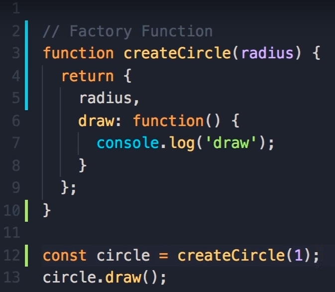

Welcome
-
Object Literals:
- note: start using "let" and "const" over var. With const you are defining a constant with no reassign while you can reassign with let
- object literal syntax is the curly brace, {}
- objects in JS is a collection of key value pairs
- example:
const circle = {
radius:1,}
location: {
x:1,},
y:1,
draw: function(){
console.log('draw');}
- members are the radius, location, and draw. radius and location are properties and draw is a method or function
- properties are used to hold values while methods define some logic
- we can use dot operator to access the members
- note: start using "let" and "const" over var. With const you are defining a constant with no reassign while you can reassign with let
-
Factory Function vs Constructor:
- Object literal syntax is not a good way to create a object and duplicate it if the object has at least one method
- instead lets use a Factory function or Constructor
- if object has one or more methods we say it has behavior
- Factory Function example:
- 
- Constructor example:
- uses the "this" keyword to set the properties of this object
- "this" refers to the object that is executing this piece of code
- "this" is used with the "new" operator and "new" creates an empty object. Then "this" points to that new object
- by default, "this" points to the global object. In a browser, this would be the window object
- this is why it is important to not forget the "new" keyword because we want it to point to the object created
- Not doing so may lead to bugs and values being changed unintentionally
- using the "new" operator does three things: create an empty object, sets "this" to point to that object, and return that object from the contructor function (the return happens implicitly)
- Which approach should you use?
- programmers fro m C# or Java may prefer the constructor syntax since it looks like it is creating an instance of a a class
- On the other hand, other programmers prefer the factory function since if we forgeet the "new" operator, we will make errors
- choose the pattern YOU prefer
-
Built in Constructors:
- Every object in JS has a property called constructor and that references the function that was used to contruct or create that object
- when we create objects using the factory or contructor function, its contructor will be the factory or contrutor we specified
- When we create a object using object literal syntax JS engine will translate it like this
- example: let x = {} //let x = new Object();
- there are a few other built in contructors:
- new String(); but we use, more often, the '', "", or ``
- these literals are cleaner and simpler than using the contructor
- new Boolena(); (true / false)
- new Number(); (1, 2, 3...)
-
Functions are Objects:
- in JavaScript, functions are objects
-
Values vs Reference types:
- Value Types: Number, String, Boolean, Symbol, undefined, null
- Reference Types: Object, Function, Array
- Primitives:
- let x = 10;
- let y = x;
- lets now say x = 20
- x and y are independent of each other, so if we look at there values, x = 20 but y = 10 (we copy their values)
- Reference types:
- let x = { value: 10 };
- let y = x;
- x.value = 20;
- Here, x = 20 and y =20
- the take away is, when we use an object, that object is not stored in that variable but somewhere else in memory and the memory address is stored in the variable. So when we copy, x into y, we copy the address over. Therefore, both x and y are pointing to same object in memory. Any changes to the object using x or y, the changes are immediately visible to the other variable
- primitves are copied by value but reference types (objects) are copied by address
-
Adding/Removing Properties:
- Objects in JS are dynamic. This is useful for adding things on the fly. Useful for mobile or web applications where it may send a user object to the server. On the server we get this user object and we can add additional stuff to it like tokens. In games, this can be currency.
- Because we don't have classes we don't need to define these properties ahead of time and we can add them whenever we want. This makes JS powerful. In C# or Java, we would need to go back and change the classes.
- examples:
- circle.location = {x:1};
- circle['location'] = {x:1}; note: these two are the same, with the latter being bracket notation
- bracket notation useful when property names are not valid identifiers such as "center-location"
- To delete properties use the delete operator
- example: delete circle.location;
-
Enumerating Properties:
- to enumerate all the members of an object, we can use a for in loop to get all the keys
- to check for the existance of a property or a method in an object use the in operator
-
Abstraction
- this means to hide the details and complexities and show/expose only essentials. This done so clients or specific methods don't get messed up
- Instead of setting properties in the object, we can use let. This is temporary and will be out of scope when we exit the function.
- this works because of closure in JS
- Closure determines what variables will be accessible to an inner function
- Closure vs Scope
- closure determines what variables will be accessible to an inner function
- scope is temporary but closure stays
- reference: https://robertnyman.com/2008/10/09/explaining-javascript-scope-and-closures/
-
Getters/Setters:
- we can use defineProperties or defineProperty
- benefits of a setter is we can perform a validation
-
comparison operator
!=, ==, <, >, <=, >=
<> is same as != -
arithmetic operators:
same concept as other lang (+, -, /, *, %) -
Logical operator:
&& or AND
|| or OR - Triple equals: same as == but compares data type as well
-
while loop: same as other lang
while(){} -
do while loop:
do{
//executes this first and at least once
}while() -
for loop: same as other lang
for(i = 0; i <= 10; i++){} -
switch statement:
switch(case){
case 1:
something;
break;
case 2:
something;
break;
default:
}
-
die and exit functions:
die(); and exit(); do same thing - kill rest of code - goes over them we can print with the functions by doing die('error') OR exit('error') we do this because
|Ex| mysql_connect('localhost','root','') or exit('Could not connect to database')
echo 'Connected!'
this will display connected! if connection successful or exits if not -
expression matching:
preg_match
$string = 'This is a string.'
if (preg_match('/is/', $string) ){
echo 'Match Found';
}else {
echo 'No match found';
}
NOTE:The solution (which other answers don't mention—at least at the time of my originally writing this) is that when PHP refers to delimiters, it's not referring to the delimiters you see in your code (which are quote marks) but the next characters inside the string. (In fact I've never seen this stated anywhere in any documentation: you have to see it in examples.) So instead of having a regular expression syntax like what you may be accustomed to from many other languages:
/something/
PHP uses strings, and then looks inside the string for another delimiter:
'/something/'
The delimiter PHP is referring to is the pair of / characters, instead of the pair of ' characters. So if you write 'something', PHP will take s as the intended delimiter and complain that you' `re not allowed to use alphanumeric characters as your delimiter. So if you want to pass (for instance) an i to show that you want a case-insensitve match, you pass it inside the string but outside of the regex delimiters:
'/something/i'
If you want to use something other than / as your delimiter, you can, such as if you're matching a URL and don't want to have to escape all the slashes:
'~something~' -
-functions:
function functionName(argument1, argument2){
something;
return something;
}
to return, we do the same thing as usual -
-Global variables and Functions:
function functionName(argument1, argument2){
something;
return something;
}